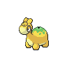

📖 英語版の図鑑説明
Numel stores magma of almost 2,200 degrees Fahrenheit within its body. If it gets wet, the magma cools and hardens. In that event, the Pokémon’s body grows heavy and its movements become sluggish.
日本語訳
体内に約2,200度のマグマを蓄えています。濡れるとマグマが固まり、体が重くなって動きが鈍ります。
📝 この図鑑文に出てくる英単語
| 英単語 | 意味 | 品詞 | レベル |
|---|---|---|---|
| stores | たくわえる | 動詞 | 中3 |
| magma | マグマ | 名詞 | 大学 |
| almost | ほとんど | 副詞 | 中2 |
| degrees | 度(複数形) | 名詞 | 中3 |
| cools | 冷やす | 動詞 | 中2 |
| hardens | 固める | 動詞 | 高校 |
| movements | 動き(複数形) | 名詞 | 高校 |
| sluggish | のろのろした | 形容詞 | 大学 |
文法ポイント if 〜 は「もし〜ならば」という条件を表す接続詞です。
💡 英語名「Numel」の由来
英語名「Numel」は、numb（しびれた）とcamel（ラクダ）を組み合わせた名前と考えられている。ドイツ語の名前は「Camaub」で、Kamel（ラクダ）、taub（しびれた）から作られている。
出典 Bulbapedia
📊 ドンメルの種族値
HP60
こうげき60
ぼうぎょ40
とくこう65
とくぼう45
すばやさ35
合計 305
❓ よくある質問
- ドンメルの英語名は？
- ドンメルの英語名は「Numel」です。
- ドンメルの英語名「Numel」の由来は？
- 英語名「Numel」は、numb（しびれた）とcamel（ラクダ）を組み合わせた名前と考えられている。ドイツ語の名前は「Camaub」で、Kamel（ラクダ）、taub（しびれた）から作られている。
- ドンメルは英語版の図鑑でどう説明されている？
- 「Numel stores magma of almost 2,200 degrees Fahrenheit within its body. If it gets wet, the magma cools and hardens. In that event, the Pokémon’s body grows heavy and its movements become sluggish.」と書かれています。日本語にすると「体内に約2,200度のマグマを蓄えています。濡れるとマグマが固まり、体が重くなって動きが鈍ります。」という意味です。
ドンメルは第3世代（ホウエン地方）のポケモンです。第3世代（ホウエン地方）の英語名一覧 →